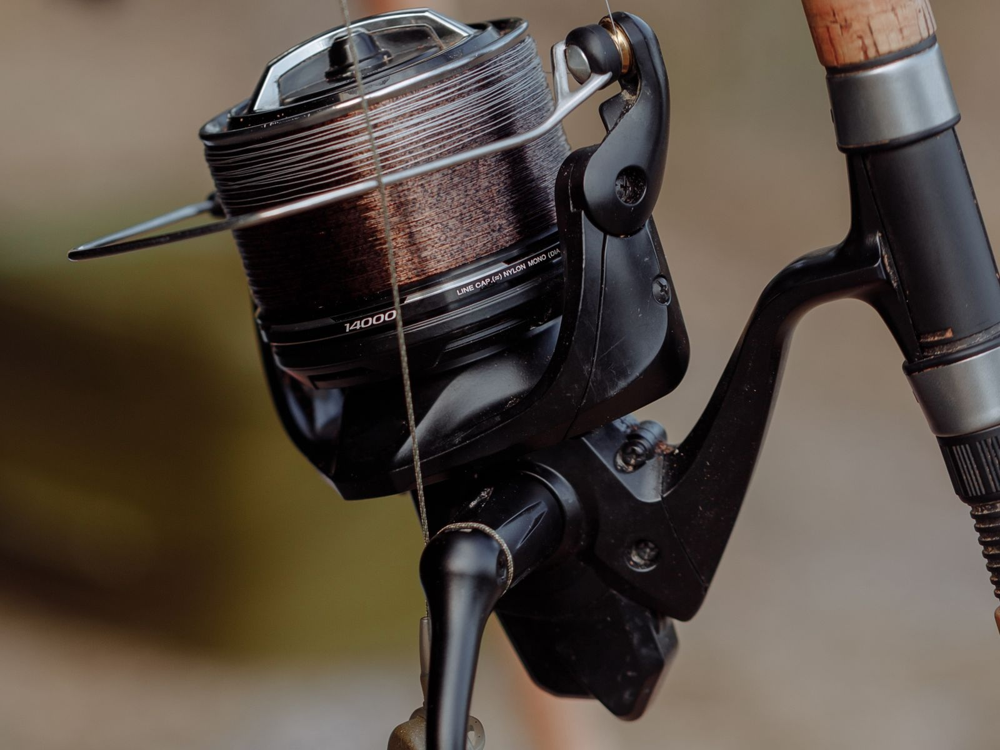
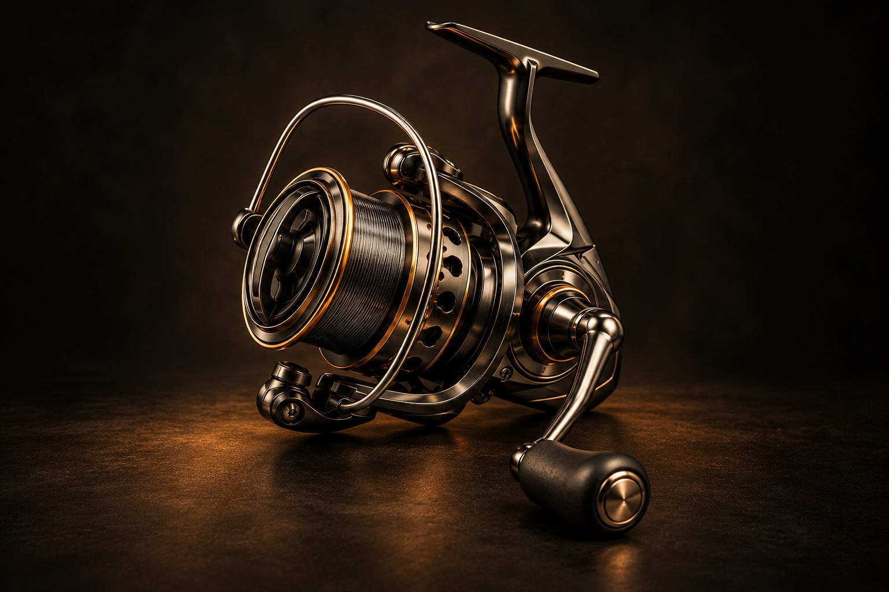

낚시 릴은 어떻게 줄을 감고 풀어줄까 [굳이구지]
손잡이를 돌리고 줄을 당기며 로터·스풀·드랙의 역할을 살펴보는 체험

낚싯대에 장착된 스피닝 릴의 스풀과 줄 안내 장치. 체험 속 모형과는 다른 제품이다. (사진=Thirdman/Pexels)[서울=뉴시스] 안재현 기자 = “낚시는 수학과 같아서, 완전히 배울 수는 없다.”
영국 작가 아이작 월턴이 낚시를 다룬 책 ‘조어대전’에서 남긴 말이다. 낚싯줄을 감는 일도 들여다볼수록 궁금한 점이 생긴다. 손잡이를 돌릴 때 줄을 감는 것은 어느 부품일까. 물고기가 세게 당기면 줄은 왜 거꾸로 풀려나갈까.

낚시 릴을 표현한 이미지로, 실제 낚시 릴의 구조와는 차이가 있다. 해당 이미지는 기사의 이해를 돕기 위해 AI 생성 후 가공 및 편집함. [그래픽=뉴시스]스피닝 릴은 손잡이를 돌리면 기어를 통해 로터가 회전한다. 로터에 달린 줄 안내 장치가 낚싯줄을 스풀 둘레로 감는다. 이때 스풀은 앞뒤로 오가며 줄이 한곳에 몰리지 않도록 감기는 위치를 바꾼다. 스풀만 빙글빙글 돌아 줄을 감는 구조와는 다르다.
줄을 감다가도 강한 힘으로 잡아당기면 스풀이 돌아가며 줄을 내줄 수 있다. 이때 저항을 조절하는 장치가 드랙이다. 마찰을 이용해 버티다가 설정한 저항을 넘는 힘이 걸리면 미끄러지며 줄이 풀리게 한다. 다만 드랙이 있다고 줄이 끊어지지 않는 것은 아니다. 줄의 상태와 매듭, 낚싯대에 걸리는 힘도 영향을 준다.
손잡이 한 바퀴에 감기는 줄의 길이도 릴마다 다르다. 손잡이를 한 바퀴 돌릴 때 로터가 몇 바퀴 도는지를 나타내는 기어비뿐 아니라, 줄이 감긴 스풀의 반지름에 따라서도 달라진다.
비주얼 뉴시스의 ‘안재현의 굳이구지’ 낚시 릴편에서는 화면의 손잡이를 직접 돌려본다. ‘파헤쳐보기’에서는 방금 조작한 기록을 이어받아 손잡이와 로터, 스풀이 어떻게 연결되는지 살펴본다.
이어지는 실험에서는 기어비를 바꾸며 감기는 길이를 비교하고, 스풀이 앞뒤로 오가는 움직임도 관찰한다. 줄을 당기는 힘과 드랙의 상대적인 저항을 바꾸면 스풀이 버티는 경우와 미끄러지는 경우를 나눠 볼 수 있다.
체험의 기어비와 저항은 원리를 비교하기 위한 설정이다. 특정 제품의 성능을 재현하거나 물고기의 움직임을 계산한 것은 아니다. 줄을 감는 장치 안에 줄을 내주는 장치도 들어 있다는 사실을 직접 확인하는 체험이다.
◆ 비주얼 뉴시스에서 낚시 릴 손잡이를 직접 돌리고 줄이 감기고 풀리는 원리를 살펴보세요. https://visual.newsis.com/goodeasy/fishing-reel/
크리에이티브 디렉터 = 안재현